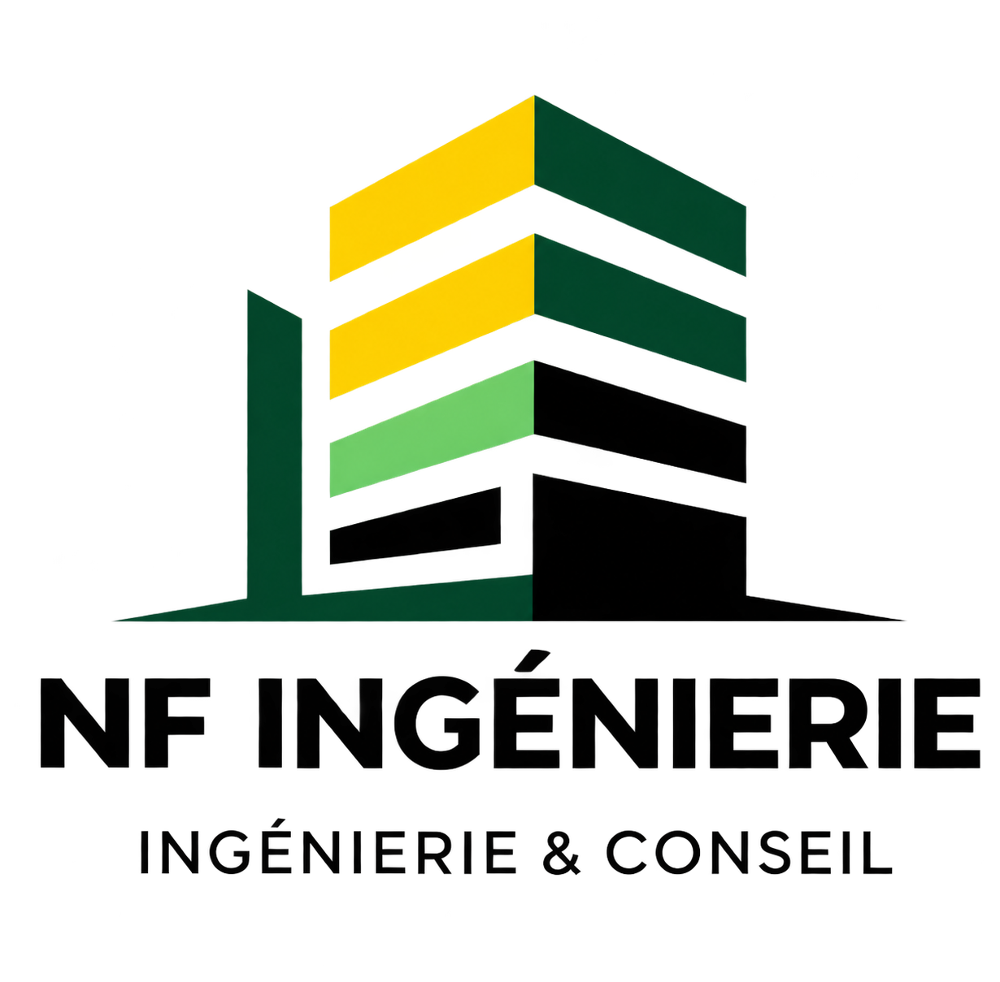

Génie climatique & plomberie
Chauffage, ventilation, climatisation et plomberie sanitaire : production, distribution, régulation et réseaux associés.
Bureau d’études techniques
NF Ingénierie accompagne les opérations de construction, de rénovation et de réhabilitation en génie climatique, électricité, gestion technique du bâtiment et performance énergétique.

NF Ingénierie
NF Ingénierie intervient dans l’ingénierie et la maîtrise d’œuvre des lots techniques du bâtiment. Les missions concernent aussi bien les opérations neuves que la rénovation et la réhabilitation.
L’accompagnement couvre l’analyse de l’existant, les études de conception, la consultation des entreprises et le suivi de l’exécution, avec une lecture coordonnée des enjeux techniques et énergétiques.
Domaines d’intervention
Les installations sont étudiées dans leur ensemble afin de conserver une cohérence entre confort, fonctionnement, exploitation et performance énergétique.
Chauffage, ventilation, climatisation et plomberie sanitaire : production, distribution, régulation et réseaux associés.
Courants forts et courants faibles, distribution électrique, éclairage, réseaux de communication, sécurité et sûreté.
Gestion, supervision et pilotage des équipements techniques pour faciliter le suivi du fonctionnement des installations.
Études de solutions intégrant notamment photovoltaïque, solaire thermique, géothermie, biomasse, cogénération et récupération de chaleur.
Du diagnostic à la réception
Trois familles de prestations permettent d’adapter l’intervention à la phase du projet et au niveau d’accompagnement recherché.
Conseil & études
Maîtrise d’œuvre & ingénierie
Exécution & pilotage
Méthode
L’organisation des missions suit une progression simple, lisible et adaptée aux différentes étapes de conception et de réalisation.
Comprendre l’existant, les besoins, les contraintes et les objectifs du projet.
Définir, comparer et détailler les solutions techniques adaptées à l’opération.
Préparer les pièces techniques et accompagner la consultation des entreprises.
Suivre l’exécution, contrôler les documents et préparer la réception des travaux.
Typologies de projets
NF Ingénierie intervient sur des bâtiments tertiaires, résidentiels et industriels, pour des maîtres d’ouvrage publics et privés. Les études tiennent compte des exigences propres à chaque typologie et de ses conditions d’exploitation.
Votre projet
Présentez votre besoin à NF Ingénierie afin d’identifier la mission et le niveau d’accompagnement adaptés à votre projet.